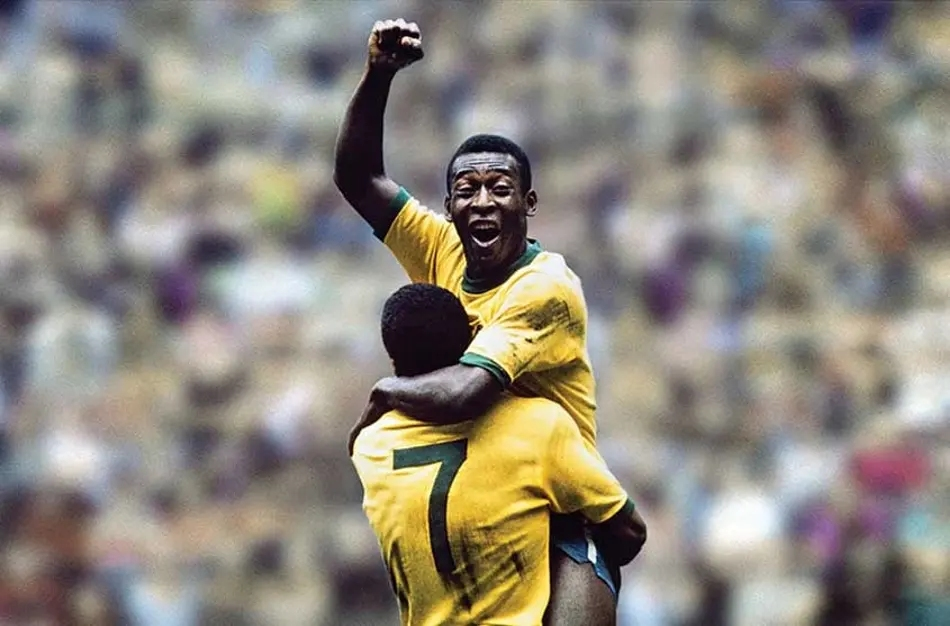
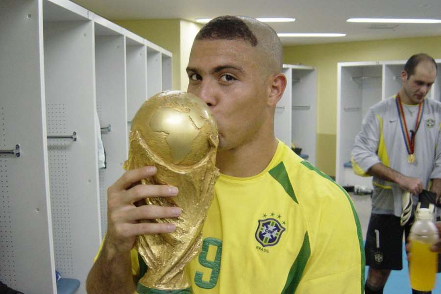
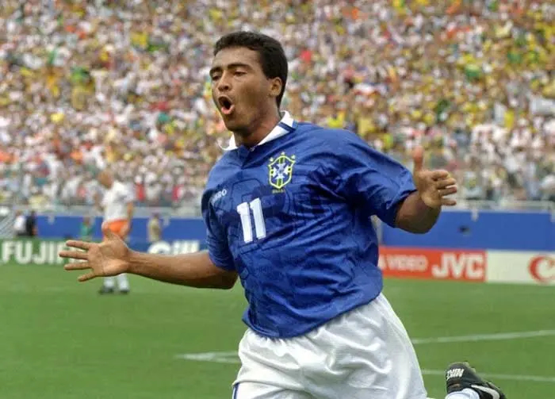
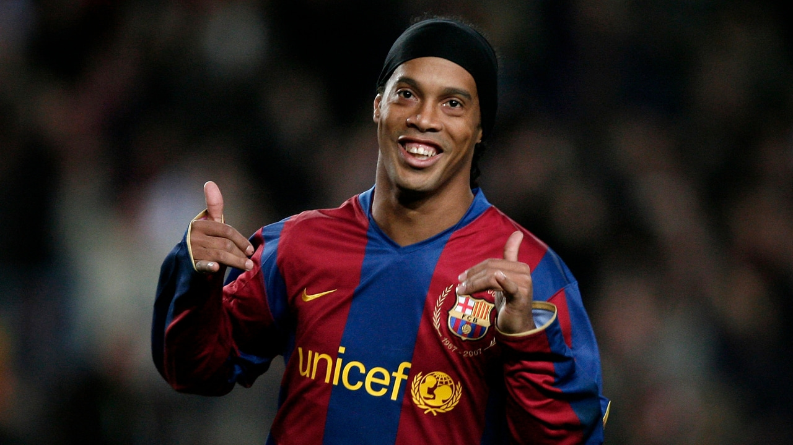
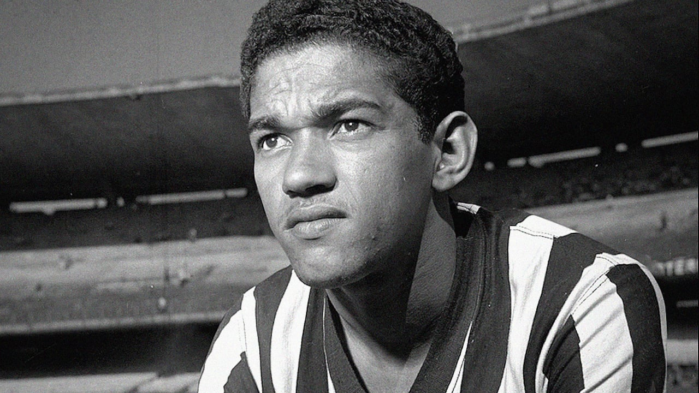
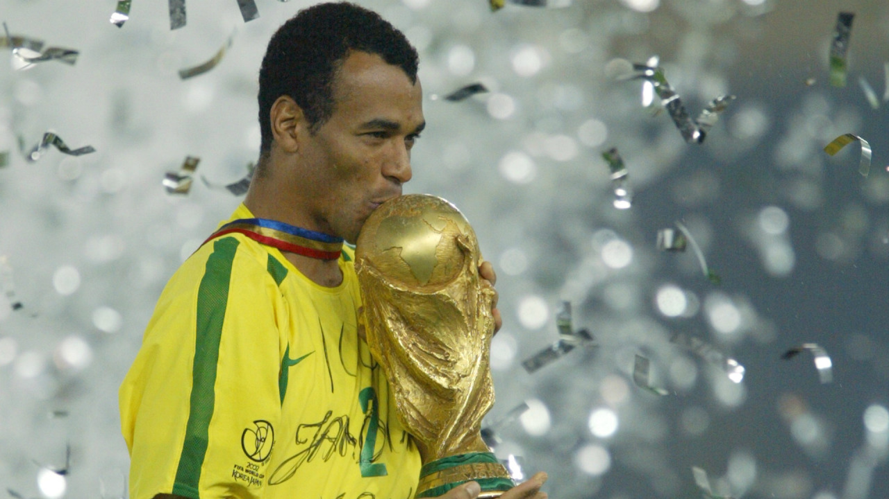

A seleção brasileira de futebol é uma das mais vitoriosas e emblemáticas
da história do esporte, reconhecida mundialmente por seu estilo de jogo criativo,
técnico e ofensivo. Desde sua primeira participação em Copas do Mundo, o Brasil
construiu uma trajetória marcada por conquistas memoráveis, incluindo seus cinco
títulos mundiais, mais do que qualquer outra nação. Ao longo das décadas, revelou
jogadores que se tornaram ícones globais e ajudaram a consolidar a identidade do
chamado “futebol arte”. Além dos troféus, a seleção carrega um forte simbolismo cultural,
representando orgulho nacional e sendo uma das maiores expressões da paixão
brasileira pelo futebol.
A "EVOLUÇÃO"
A evolução da seleção brasileira reflete mudanças profundas no futebol ao longo das décadas.
Na era de Pelé, especialmente nas Copas de 1958, 1962 e 1970, o Brasil se destacou pelo chamado
“futebol arte”, com um estilo ofensivo, criativo e altamente técnico, apoiado em craques que
jogavam com liberdade e improviso. Com o passar do tempo, principalmente a partir dos anos 1990,
a equipe passou a adotar uma abordagem mais equilibrada, combinando talento individual com
organização tática e disciplina defensiva — como visto no título de 1994. Já nos anos 2000,
com jogadores como Ronaldo Nazário e Ronaldinho Gaúcho, houve uma retomada do brilho ofensivo,
culminando na conquista de 2002. Nas últimas décadas, a seleção tem buscado se adaptar ao futebol
moderno, mais físico e estratégico, mantendo a tradição técnica, mas enfrentando maior equilíbrio
entre as grandes potências do esporte.
Maiores artilheiros da história da Seleção Brasileira
Neymar – 79 gols
Pelé – 77 gols
Ronaldo Nazário – 62 gols
Romário – 55 gols
Zico – 48 gols

Pelé, o Rei do Futebol, é um dos maiores jogadores da história do esporte, conhecido por sua habilidade, velocidade e visão de jogo excepcionais. Ele conquistou três Copas do Mundo com a seleção brasileira e marcou mais de mil gols em sua carreira, deixando um legado duradouro no futebol mundial.Neymar, um dos maiores jogadores brasileiros da atualidade, é conhecido por sua habilidade técnica, velocidade e criatividade em campo. Ele tem sido uma peça fundamental para a seleção brasileira, contribuindo com gols e assistências em competições internacionais, e é amplamente reconhecido como um dos melhores jogadores do mundo.

Ronaldo Nazário, conhecido como "O Fenômeno", é um dos maiores atacantes da história do futebol. Ele se destacou por sua velocidade, habilidade de drible e precisão na finalização, conquistando dois títulos de Copa do Mundo com a seleção brasileira e deixando um legado duradouro no esporte.

Romário, um dos maiores atacantes da história do futebol brasileiro, é conhecido por sua habilidade técnica, velocidade e faro de gol. Ele conquistou a Copa do Mundo de 1994 com a seleção brasileira e marcou mais de mil gols em sua carreira, deixando um legado duradouro no esporte.

Ronaldinho Gaúcho, conhecido como "O Gaucho", é um dos maiores jogadores da história do futebol. Ele se destacou por sua habilidade técnica, velocidade e criatividade em campo, conquistando o título de Ballon d'Or em 2005 e deixando um legado duradouro no esporte.

Garrincha, conhecido como "O Anjo das Pernas Tortas", é um dos maiores jogadores da história do futebol brasileiro. Ele se destacou por sua habilidade de drible, velocidade e criatividade em campo, conquistando dois títulos de Copa do Mundo com a seleção brasileira e deixando um legado duradouro no esporte.

Cafu, um dos maiores defensores da história do futebol brasileiro, é conhecido por sua velocidade, habilidade de drible e capacidade de marcar gols. Ele conquistou a Copa do Mundo de 1994 com a seleção brasileira e foi uma peça fundamental na equipe que venceu o torneio.